Ecetsav (Etánsav)
Szerkezet
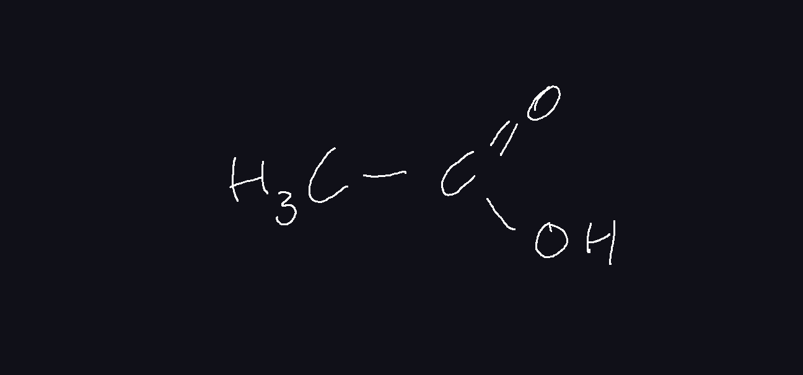- Poláris
-
H-kötések
dimerek
Fizikai tulajdonság
- színtelen szúrós szagu folyadék
- 17C szilárd, tűszerű folyadék -> jégecet, tömény ecetsav
- 118C forráspont (alkoholoktól, aldehidektől magasabb)
- korlátlanul oldódik vízben
Kémiai tulajdonság
Sav-bázis
Karbonsavak között erős sav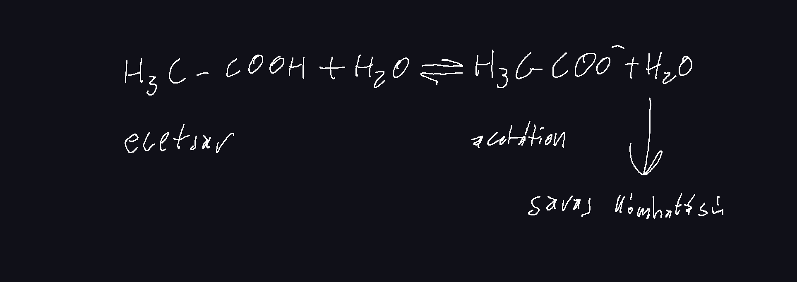
Közömbösítés
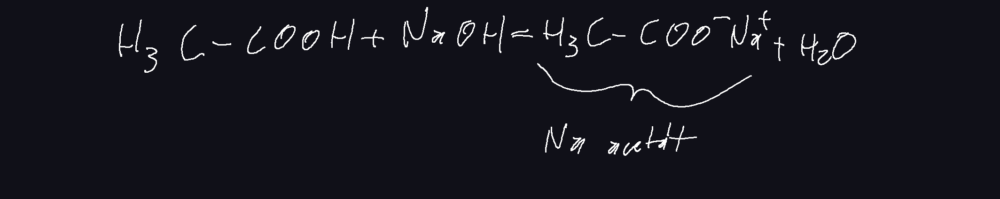Reakció fémekkel

DE! A rézzel oxigén jelenlétében reagál, mérgező vegyület képződik
Előállítás
-
Erjedéssel
etil-alkohol -> Baktériumok -> ecetsav
Pl: bor ecetesedése
közvetlen
alma -> bakt -> ecetsav (almaecet)
5%-10% ecetsav állítható elő -
Szintetikusan
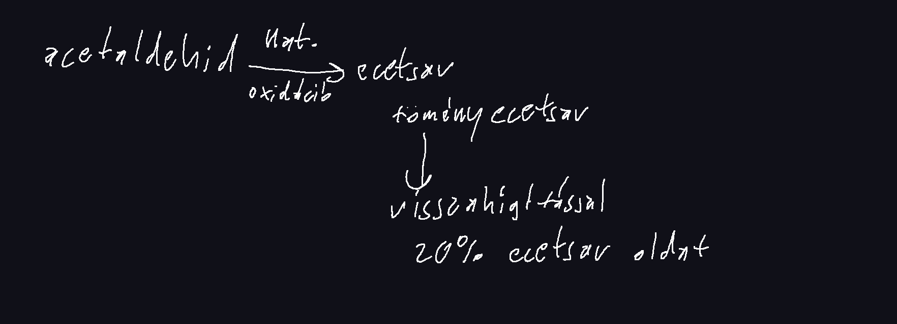
Felhasználás
- ételízesítés
- tartósítás
-
vízkőoldás
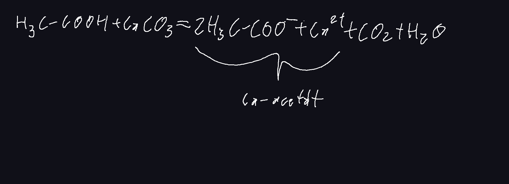
- műszálak előállítása
- gyógyszergyártás
Butánsav (vajsav)
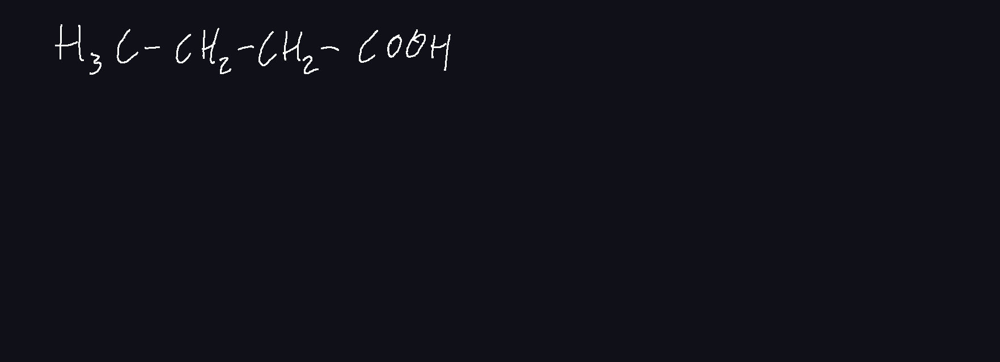- Színtelen, büdös folyadék
- emberi bőrőn erjesztő baktériumok révén képződhet (izzadságszag)
- zsír, vaj, szalonna avasodásakor képződik
Pentánsav (valeriánsav)
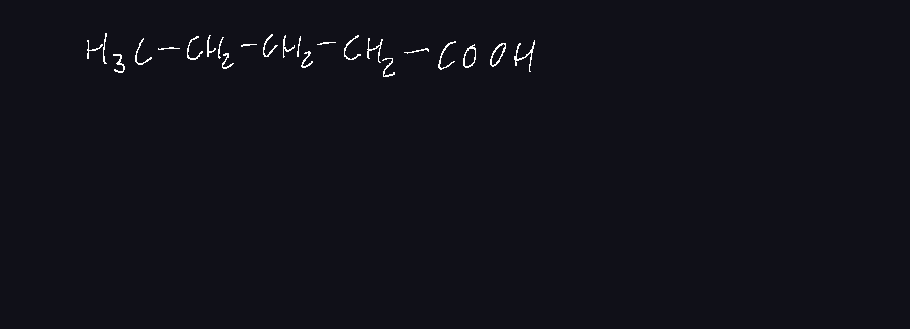- színtelen, kellemetlen szagú folyadék
- macskagyökérben fordul elő -> nyugtató hatás
- nőstény macskák termelik, kandúrok megérzik
Palmitinsav
-
Nagy szénatomszámú karbonsav - zsírsav
Fehér színű szilárd, viasz szerű -
Képlete:
Csak 1-szeres kovalens kötés a C atomok között -> telített zsírsav
vonal képlet:
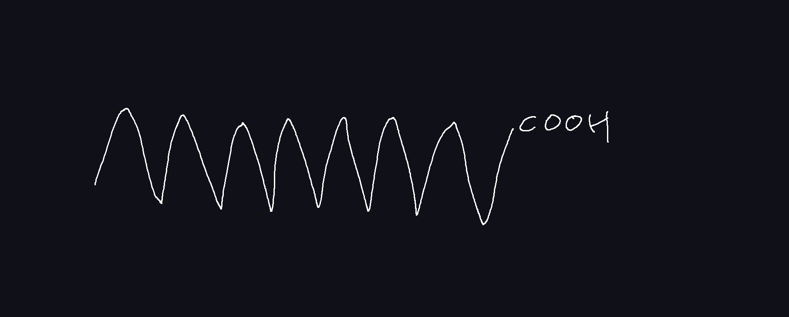
Az apoláris szénhidrogénlánc érvényesül, karboxil csoport hatása kicsi, ezért vízben nem oldódnak. -
Sóképzés:
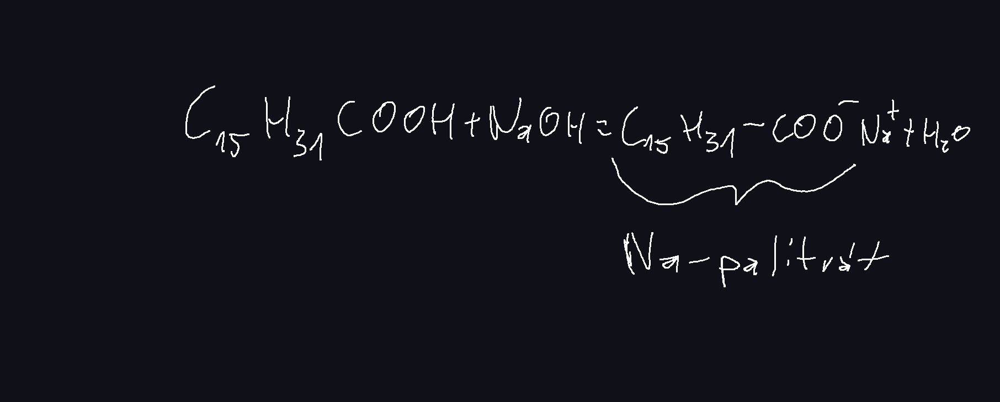
- Előfordulás: állati zsírokban
Sztearinsav
-
Nagy szénatomszámú karbonsav - zsírsav
Fehér színű szilárd, viasz szerű -
Képlete:
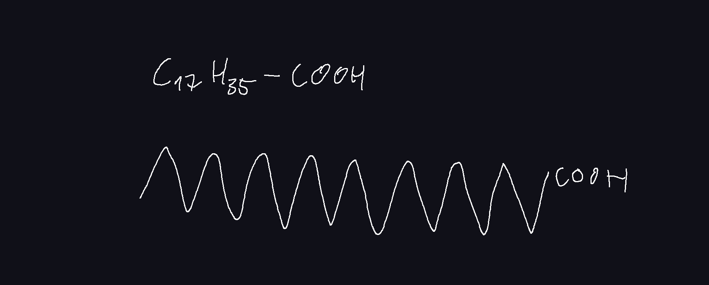
Csak 1-szeres kovalens kötés a C atomok között -> telített zsírsav
vonal képlet:
Az apoláris szénhidrogénlánc érvényesül, karboxil csoport hatása kicsi, ezért vízben nem oldódnak. -
Sóképzés:
Szteártok - Előfordulás: állati zsírokban
Akrilsav
- Telítetlen karbonsav
-
Szerkezete:
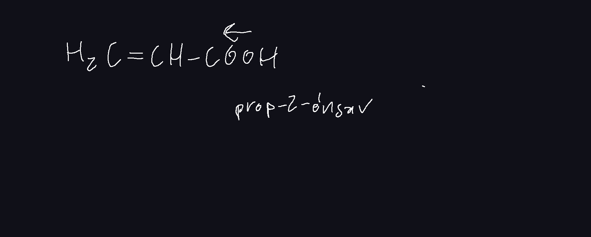 -
Tulajd:
színtelen, szúrós szagu folyadék - Addícíó és polimerizáció
-
Jelentőssége: akrilsav -> metakrilsav -> (polimerizáció) -> plexi
Plexi: kemény átlátszó műanyag, nem olyan törékeny, mint az üveg, de könnyen karcolódik
Olajsav
- Nagy szénatomszámú telítetlen karbonsav -> telítetlen zsírsavak
-
Szerkezete:
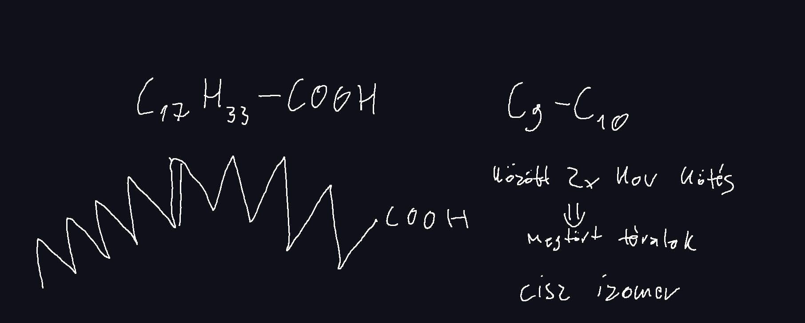 -
Tulajdonságai:
- Színtelen nagy viszkozitású folyadék
- Nagy apoláris szénhidrogénlánc miatt vízben nem oldódik
-
Addícióra képes
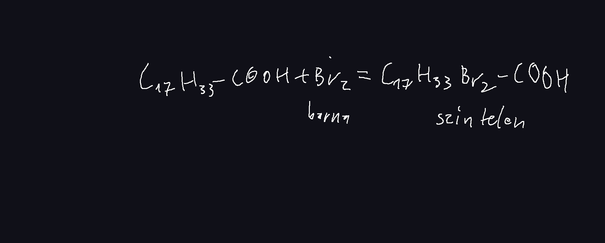
Kimutatás
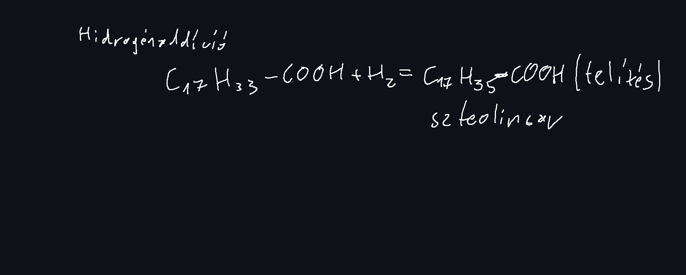
margaringyártás
növényi olajok, olajsav (foly) -> (hidrogénezéssel katalizátor (Ni)) -> margarin szteorinsav (szil) -
Sóképzés
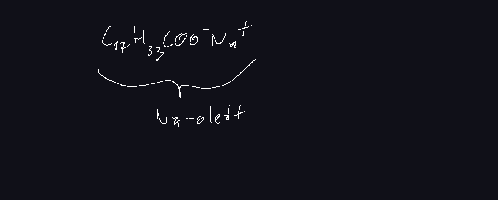 - Jelentősség növényi olajokban
Benzoesav (Benzolkarbonsav)
-
Aromás karbonsav
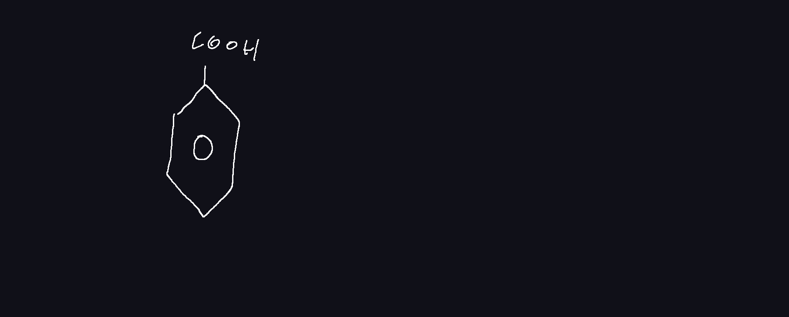- Fehér, szilárd halmazállapotú
- Vízben rosszul oldódik a nagy apoláris gyűrű miatt
-
Sója a Na-karbonát
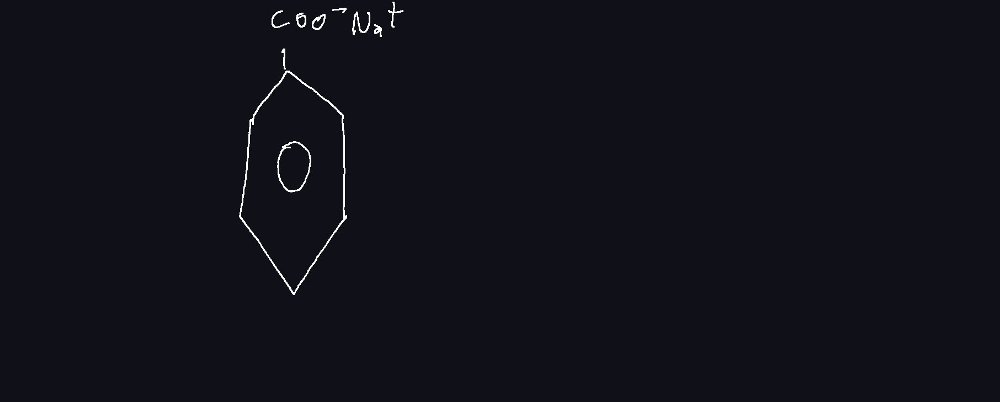
Tartósítószer, nagyobb mennyiségben mérgező
Oxálsav (Etándisav)
-
Szerkezet
- Kétértékű karbonsav
- Színtelen, szilárd halmazállapotú vegyület
-
Forráspontja: 365C
Magas hasonló M-ű vegyületekhez képest - kitűnően oldódik vízben
- mérgező (acidózis)
-
Előfordulás
- Sóska
-
Ca-oxalát
Ca(COO)2
Borostyánkősav (Butándisav)
- Színtelen, szilárd
-
Előforulás:
- borostyán növényben
- gyümölcsökben
- emberi testben anyagcsere folyamatos köztes terméke
Tulajdonságai
| triglicerid | |
| zsírok | olajok |
|
|
|
|
Kísérlet
Tap:
- két fázisú rendszer
- I2 az olajban oldódik barna színnel
- víz poláris, olaj apoláris, jód apoláris
Szappanok
Szappanfőzés
Régen
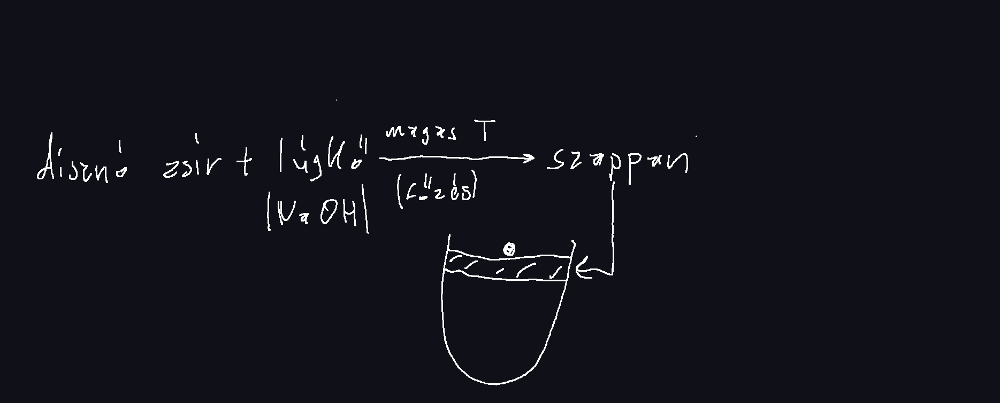Szappan képződése
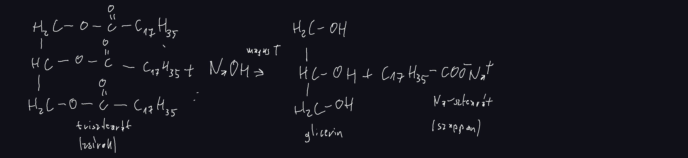
Na-palmiát
Na-oleát
Na-alkanoát
- Nátrium szappanok
- Kemények, nehezebben formázhatóak, mosószappan
K-palmiát
K-oliát
K-alkanoát
- Káliszappanok
- lágyak, könnyen formázhatóak, mosakodószappan
Szappan definíciója
nagy széntartalmú zsírsavak, Na vagy K sói.
Tulajdonságai
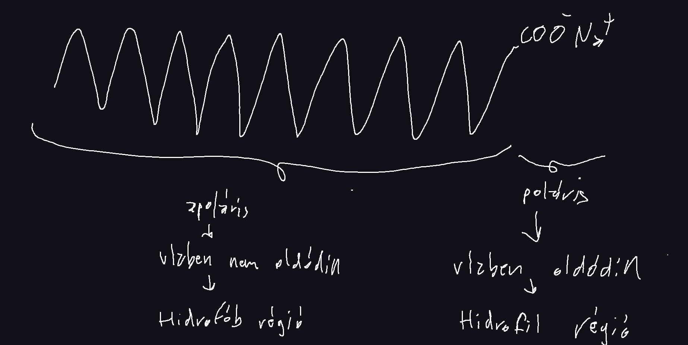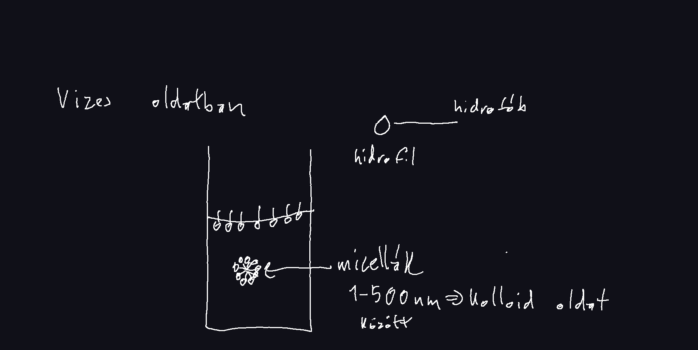
A szappanok amfipatikus vegületek: kettős polaritással rendelkeznek.
A hab olyan levegővel telt buborék, amelynél a folyadékfilmben a szappanrészecskék hidrofil részei között erős kölcsönhatás van.
Mosóhatása
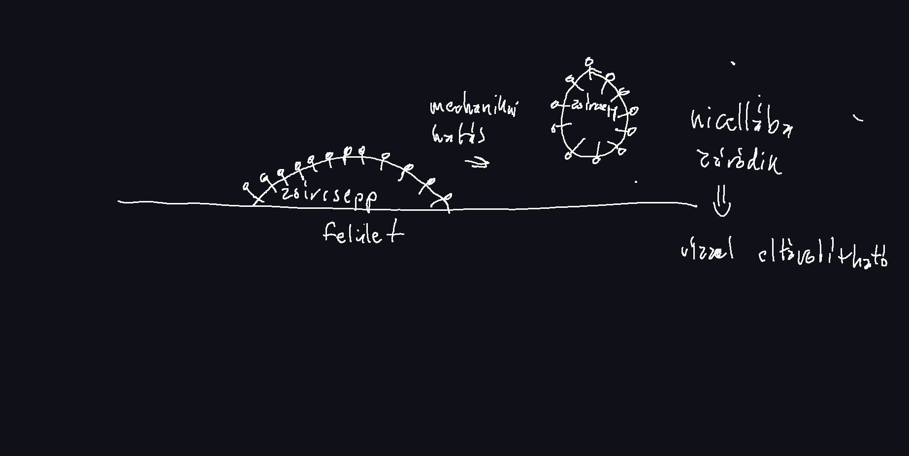Azok a nicellák, amelyek zsírcseppet zárnak magukba nem alkotnak habot
Keményvízben
- sok Ca2+, Mg2+ tartalmaz
Nem habzik a szappan -> csökkentett mosóhatás
- Több mosószer
Keletkeznek
Ca-sztearát
Roncsolja a textilt
Megoldás: víz lágyító
Sav oldata
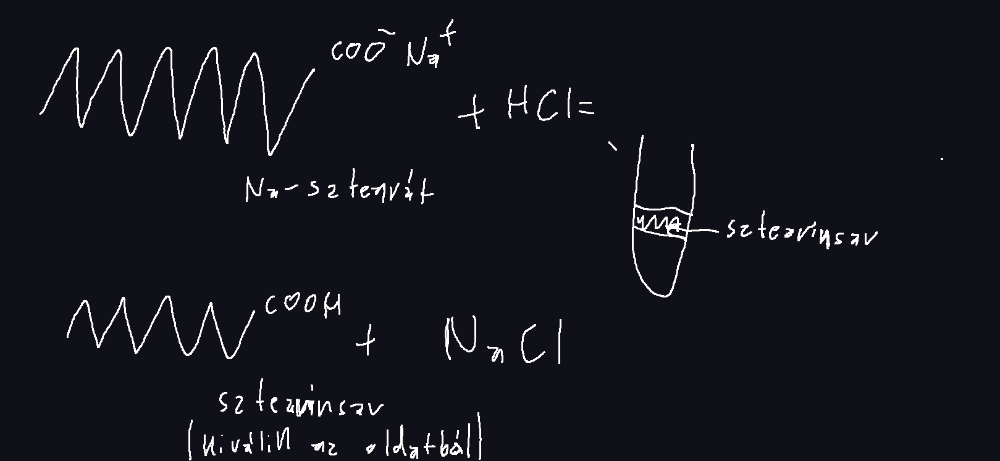Szappan oldatok kémhatása
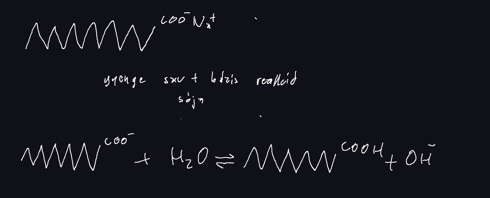hidroxidok képződnek
A szappanok lúgosak
Következménye: a hagyományos szappanok szárítják a bőrt, bőrbarát szappanoknak 5-6-os pH-ja van.
Felhasználás
Jelentőssége csökkent manapság. Szintetikus mosószereket használunk helyette.
Előnyük: semleges kémhatás
Hátrányuk: vízszennyezés
Összefoglalás
| Hidroxi vegyületek | Éterek | Oxovegyületek | Ketonok | Karbonsavak | Észterek | ||
|---|---|---|---|---|---|---|---|
| Alkoholok | Fenolok | Aldehidek | Ketonok | ||||
| Elnevezés | -ol | fenol száma | -éter | -al | -on | -sav | alkil-karboxilát |
| Általános képlet | CnH2n+2O | - |
CnH2n+2O Alkoholokkal konstitúciós izomerek |
CnH2nO |
CnH2nO Aldehidekkel konstitúciós izomerek |
CnH2nO2 |
CnH2nO2 Karbonsavakkal konstitúciós izomerek |
| Szerkezet |
H3C-O-H Hidrogén kötés |
(aromás gyűrű)-O-H Hidrogén kötés |
CH3-O-CH3 diszperziós kölcsönhatás |
H2C=O dipol-dipol kölcsönhatás |
CH3-(C=O)-CH3 dipol-dipol kölcsönhat |
H-(C=O)-OH Hidrogén kötés |
H-(C=O)-O-CH3 diszperziós kölcsönhatás |
| Halmaz állapot | folyékony, szilárd | szilárd | gáz, folyékony, szilárd | gáz, folyékony, szilárd | folyékony, szilárd | folyékony, szilárd | folyékony, szilárd |
|
Forráspont Azonos kis moláris tömeg esetén |
3. | - | 1. | 2. | 2. | 4. | 1. |
| Vízben oldódás (C kis) | jól | rosszul | nem | oldódnak | oldódnak | jól | nem |